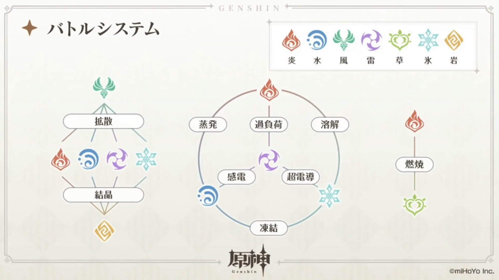
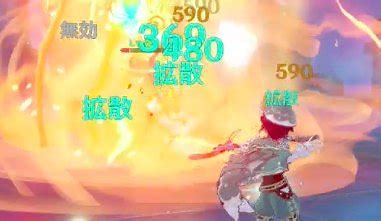

次に紹介するゲームはこちら!!
原神 ←クリックで公式サイトに飛びます


原神最大の特徴は上の画像を見ていただいたら分かるように広大なオープンワールドでの探索、戦闘、ストーリーを楽しめることにあります。
現在マップは大きく分けて七つある国のうちモンド、璃月、稲妻、スメールの四つが実装されており今後の拡張性もありながら
戦闘探索面では、原素同士を組み合わせて起こる原素反応を駆使した謎解きやダイナミックな戦闘が特徴になっております。
 
簡単に元素と元素反応についてご紹介いたします。
原神では、現在上の画像右上のとおり七つの元素が存在しています。これらの元素同士反応利用して戦い有利進めていくことができます。
画像のとおり多くの元素反応がありますので序盤から終盤まで幅広く使用する拡散反応についてのみ紹介いたします
拡散反応は草元素と岩元素以外であれば反応が起こり主に対集団に有効です。参考にわかりずらいかもしれませんが
右上の画像は炎元素の拡散反応なのですが炎が周りに広がっているように見えると思います、これが拡散反応になります。
簡単に言いますと拡散反応は対応する元素を周りに全体攻撃するような感じになります。
このように多彩な元素反応を使うことによりダイナミックな戦闘をすることができます。
とても簡単な紹介になりましたがいかがだったでしょうか？マルチプラットフォームでスマホでもプレイが
できますので是非一度プレイしてみてはいかがでしょうか。
*引用サイト:HOYOVERSE